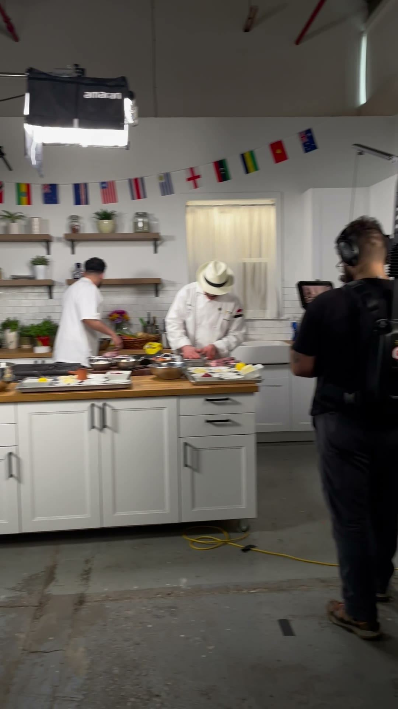

What is a creative director in social media?
Every videographer I know wants “creative director” in their bio at some point. Before you put it there, try this test. A brand hands you their whole Instagram tomorrow, with no brief and no plan. Do you know where to start?
Most content teams have three kinds of people in them. A videographer makes the shot look good. A marketing manager makes sure the post hits its numbers. A creative director decides what the brand is saying in the first place, and every shot and every number has to serve that. The first two jobs are easy to see. The third is the one most small brands are missing, and you can tell from their feed.
The textbook definitions line up with this. Adobe’s comparison guide describes videographers as typically a one-person team or a small crew whose job is to capture footage, and quotes the cinematographer Josh Miller: “Directing is actually one of the biggest things as a videographer that you need to learn.” The general definition of a creative director is the person who makes high-level creative decisions and keeps a team’s work consistent with them.
| Videographer | Marketing manager | Creative director | |
|---|---|---|---|
| Owns | the shot | the numbers | the idea both are working for |
| Asks | how do I make this look good? | did it perform? | what are we saying, and to whom? |
| When it goes wrong | the footage came back thin | the post missed its target | the idea was thin and everybody built it anyway |
| Finished when | it is cut and it looks good | the report is in | somebody else could make it to the same standard without me |
You can hire the most talented people in the city and still post content that feels like five different brands. Everyone did their job. Nobody gave them a direction.

What does the job actually involve?
Say we are launching a restaurant’s new menu. Before anyone films, I need to know who we are talking to, what makes this place different from the one across the street, and what someone has to feel in the first three seconds to keep watching. Then I turn that into something my team can run with, so the videographer knows what we are capturing and the editor knows the story. Shooting is a small and late part of the week.
The arc comes before the script. Before a line is written, the shape goes up: what the first beat makes you need, what the second one answers, where the one turn sits. If the arc does not hold on its own, the script cannot rescue it.
Then the card. Every video leaves my hands as one document: the voiceover in a list, camera and mood direction underneath it, and under every line of dialogue, in capitals, how it is meant to be played. [NERVOUS.] [FLAT, LIKE IT IS OBVIOUS.] That bracket is the smallest thing on the page and it decides more takes than the writing does.
Then the notes. A note that says “cut the first two seconds” fixes one video. A note that says “cut the first two seconds, the hook starts when he moves” gives the editor a rule they keep. Writing the second kind is most of what separates directing from fixing.
What does it take to become one?
Taste you can explain. Liking a cut is easy. Saying why it works, in a sentence an editor can act on next week, is the skill. If you cannot explain a decision, your team can only copy it, and copying stops working the moment the brief changes.
Letting go of the camera. For the first stretch I kept re-cutting things myself. It was faster and the result was better, and it taught nobody anything. The version of this job where I am the best editor in the room is the version where the work can never be better than me on a Tuesday. Handing a cut back with three sentences on it is slower on the day and compounds for a year.
Hiring people better than you. I want people who are better than me at their part. When they bring me something I did not picture, my job is to recognise it and make room for it, while still making the call on whether it serves the idea.
Being comfortable with invisible credit. A shot is yours. A brief that worked is invisible, and the evidence that you did the job well is that the finished thing looks like it was always going to turn out that way.
Does a creative director have it all figured out?
Far from it, and the ones who act like they do are the ones I would worry about. Social media changes faster than any brief. What worked on Instagram in the spring can flop by the fall, and the format everyone copied last month is the one audiences scroll past this month.
So a big part of the job is testing. I will put out two versions of the same idea, change one thing between them, and let the audience tell me which one is right. The direction decides what we are trying to say. The testing tells me whether we said it well. A creative director who stops experimenting is running last year’s playbook with a confident face.
Questions people actually ask
Can a videographer become a creative director?
Yes, and it is one of the most common routes in. If you already shoot your own ideas, you are doing both jobs and being paid for one of them. Start by writing the brief before you film, even when you are the only person who will read it.
Is a creative director the same as a marketing manager?
No. A marketing manager is measured on results and budget. A creative director is measured on whether the work says the right thing in the brand’s voice. On a good team they argue often and need each other.
What position is higher than creative director?
In an agency, usually an executive creative director or a chief creative officer. If you work for yourself the ladder does not apply, and the only promotion available is a wider brief: more of the decision, earlier.
If you are a videographer who wants to make that move, that is exactly what my mentorship is for. Book a 15 minute call and bring the work you are making now.
The day I stopped opening the project file was the day the work started getting better without me in it.
AI disclosure. Structure and a first draft were produced with Claude from my own working practice and a reel script I wrote, then edited, fact-checked and approved by me. Both external sources were opened and checked by me. How I use AI.